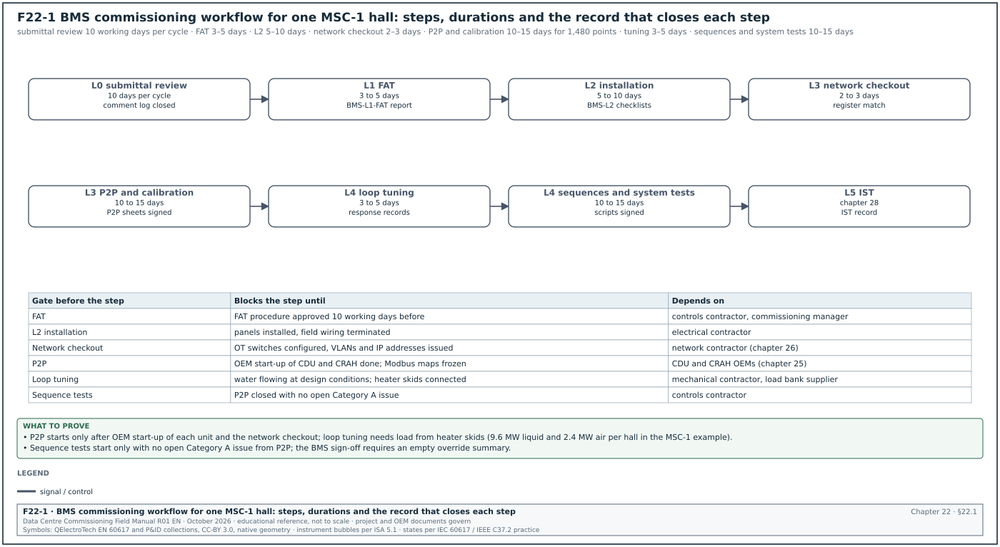
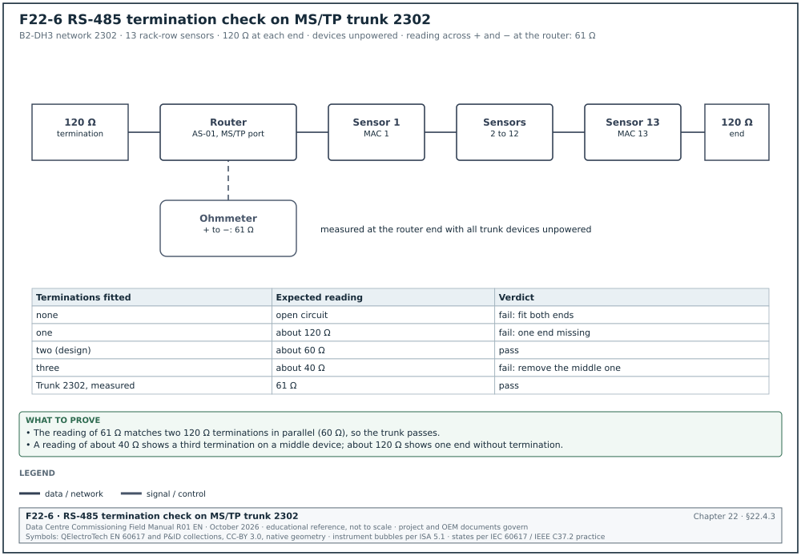
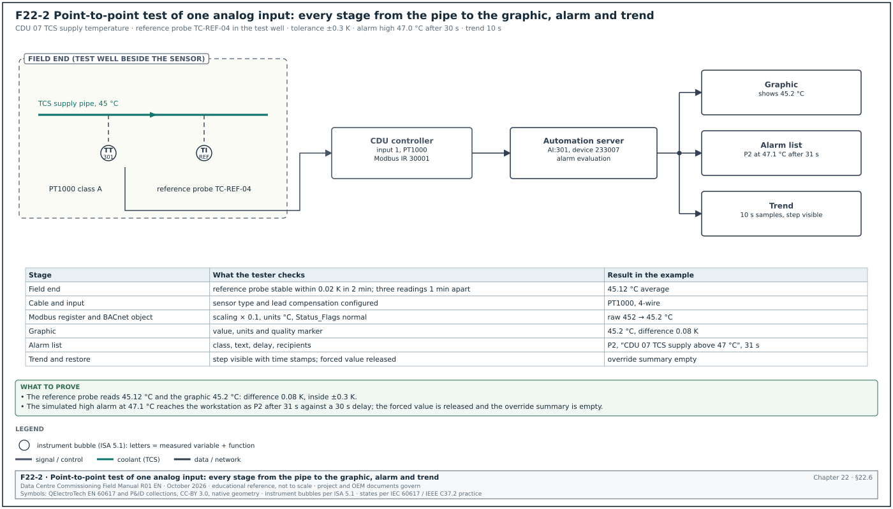
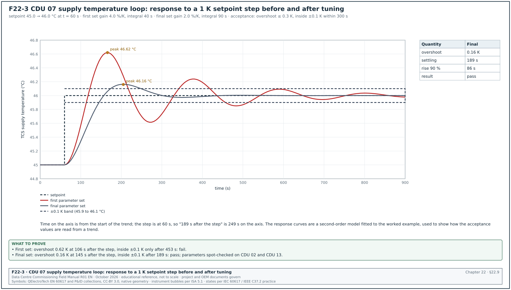
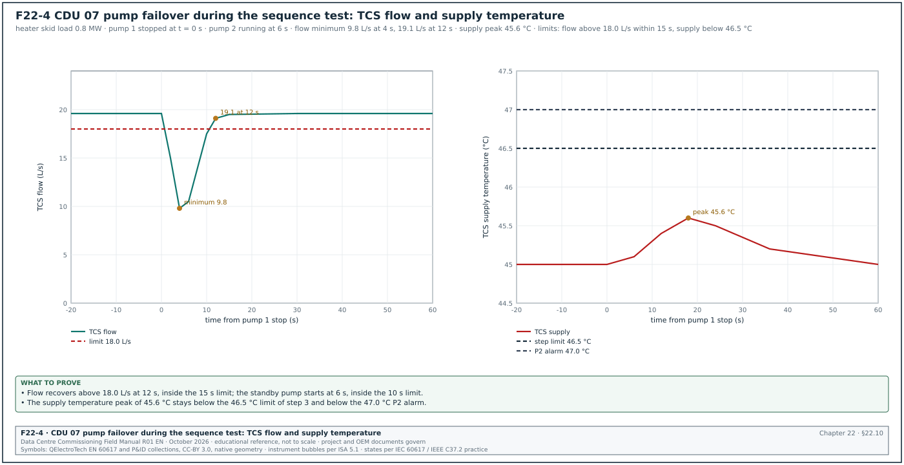
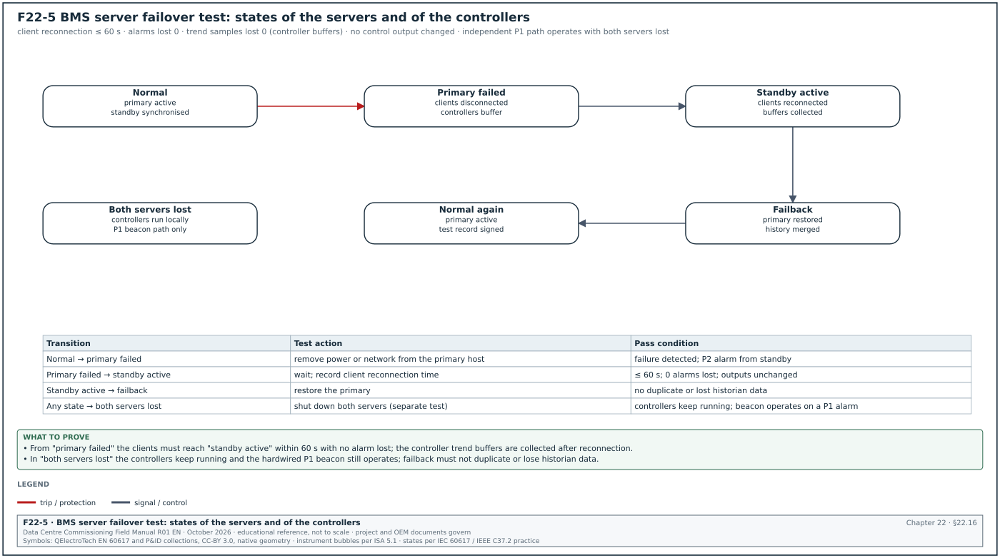

22.0Scope of this chapter
This chapter gives the commissioning procedure for the building management system (BMS) of a hyperscale data-centre campus. The procedure runs from the review of the controls submittal to the signed acceptance of the sequences of operation. Chapter 21 gives the architecture, protocols and points list that this procedure tests.
- Workflow and gates. The chapter maps BMS work to commissioning levels L1 to L5, with owners, durations in working days and the record that closes each step.
- Submittal review and factory test. It covers the controls submittal review and the factory acceptance test (FAT) of panels and software.
- Installation and network checkout. It covers the L2 panel and field inspection, the input and output (I/O) checkout and the network checkout for BACnet and Modbus.
- Point-to-point test and calibration. It gives the point-to-point (P2P) method with a filled test sheet, the sensor calibration method with reference instruments and tolerances, and the actuator stroke test.
- Loops and sequences. It covers proportional-integral-derivative (PID) loop tuning with a worked response, and the step-by-step testing of sequences of operation: staging, failover and alarm responses, with a filled sequence test extract.
- System functions. It covers alarm testing, trend verification, graphics verification, loss-of-communication tests, controller power failure and restart, server failover, time synchronisation, user accounts and security.
- Acceptance. It gives the acceptance criteria and the sign-off record.
- Documents and standards used. ASHRAE Guideline 0-2019 and ANSI/ASHRAE/IES Standard 202-2024 (the commissioning process for new buildings and new systems), ASHRAE Guideline 1.1 (heating, ventilation, air conditioning and refrigeration (HVAC&R) technical requirements for commissioning) and ASHRAE Guideline 13-2024. The chapter also uses ASHRAE Guideline 36-2024, ANSI/ASHRAE 135-2024 (BACnet), the Modbus specifications, IEC 62443 (operational technology (OT) security) and public owner specifications for BMS checkout (University of Missouri, Boise State University).
22.1BMS commissioning workflow, levels and time limits


22.1.1Levels used for BMS work
| Level | BMS activity | Performed by | Witnessed by | Exit record |
|---|---|---|---|---|
| L0 | Controls design review, points list and sequence review | Engineer of record, controls contractor | Commissioning manager | Design review comment log closed |
| L1 | FAT of panels and software, simulated I/O | Controls contractor, original equipment manufacturer (OEM) | Commissioning manager, owner operations | Signed FAT report BMS-L1-FAT-nn |
| L2 | Panel and field device installation inspection, cable tests | Controls contractor, electrical contractor | Commissioning engineer (sample witness) | Signed L2 checklist BMS-L2-nn |
| L3 | Network checkout, I/O checkout, P2P, calibration, actuator stroke | Controls contractor | Commissioning engineer (100 % of critical points, sample of others) | Signed P2P sheets and calibration records BMS-L3-nn |
| L4 | Loop tuning, sequence tests, alarms, trends, graphics, failover, restart | Controls contractor with mechanical contractor and OEMs | Commissioning manager, owner operations | Signed functional test scripts BMS-L4-nn |
| L5 | BMS behaviour in integrated systems tests | Commissioning manager | Owner, operations | integrated systems test (IST) record (chapter 28) |
22.1.2Durations and dependencies for one MSC-1 hall
| Step | Duration (working days) | Starts when | Blocks |
|---|---|---|---|
| Controls submittal review | 10 per review cycle | Submittal received complete | Panel manufacture and programming |
| FAT | 3 to 5 per hall software package | FAT procedure approved 10 days before | Panel shipment |
| L2 inspection | 5 to 10 | Panels installed, field wiring terminated | L3 P2P |
| Network checkout | 2 to 3 | L2 closed for network cabling; OT switches configured (chapter 26) | P2P of network points |
| P2P and calibration | 10 to 15 for 1,480 points | Equipment powered; OEM start-up done for unit controllers | L4 sequence tests |
| Loop tuning | 3 to 5 | Water flowing at design conditions; load available (heater skids or IT load) | Sequence acceptance |
| Sequence and system tests | 10 to 15 | P2P closed with no open Category A issue | L5 IST |
The commissioning manager records the start and finish of each step in the commissioning schedule. A step that starts before its predecessor has closed is recorded as a risk with a named owner.
Common errors:
- P2P before power. P2P cannot be done on a coolant distribution unit (CDU) that has no permanent power and no fluid. The test then covers only the controller side of the point. Plan P2P after OEM start-up of each unit.
- Loop tuning without load. A computer room air handler (CRAH) loop tuned with no heat load runs at minimum fan speed, and the tuning does not hold at design load. Loop tuning in a data hall needs heater skids or load banks (in the MSC-1 example, 9.6 MW of liquid heater skids and 2.4 MW of air heaters per hall).
- Network points tested before the gateway map is frozen. A Modbus map revision after P2P invalidates every P2P record for that device type. Freeze the map version first (chapter 25).
22.2Controls submittal review
22.2.1Contents of the controls submittal
Purpose: The review confirms that the controls design can be installed, programmed and tested as the specification requires.
Owner: The engineer of record reviews for compliance. The commissioning manager reviews for testability and for the commissioning requirements in the specification.
Inputs: Controls specification, owner's project requirements (OPR), basis of design (BOD), sequence of operation, mechanical flow diagrams, OEM unit controller documentation.
| Submittal part | What the commissioning manager checks | Typical finding |
|---|---|---|
| System architecture drawing | Layers, network numbers, BACnet broadcast management device (BBMD) locations, redundancy split | Two redundant CDUs on one switch |
| Device instance and IP register | Unique numbers in the campus scheme | Factory default instance 1 on gateways |
| Bill of materials with BACnet Testing Laboratories (BTL) listings | Each controller and gateway listed; firmware revision | Gateway firmware newer than listed revision |
| Protocol implementation conformance statement (PICS) for each device type | Change-of-value (COV) support, maximum subscriptions, object name length | Unit controller without COV; graphics will poll |
| Points list | Fields as chapter 21, section 21.10.2 | Missing alarm delays and Relinquish_Default |
| Sequence of operation as programmed | Matches the design sequence; every mode and failure case covered | No sequence for loss of supervision |
| Panel drawings and power calculation | Separation, spare capacity, uninterruptible power supply (UPS) backed supply | 24 V supply without margin |
| Wiring diagrams and terminal schedules | Terminal numbers match the panel; shield earthing shown | BACnet master-slave/token-passing (MS/TP) shield earthed at every panel |
| Field device data sheets | Sensor accuracy, range, output signal | Sensor range does not cover 55 °C technology cooling system (TCS) return |
| Graphics samples | Graphics standard followed | No marker for overridden values |
| Commissioning plan of the contractor | P2P method, calibration instruments, test forms | No reference instrument list |
22.2.2Review steps
Steps:
- Completeness check within 2 working days. Check that every part in the table above is present. Return an incomplete submittal at once with a list of the missing parts. The review clock starts when the submittal is complete.
- Architecture review. Compare the architecture drawing with the redundancy design. Confirm that each redundant pair of equipment is split across controllers, switches and power supplies.
- Listing and PICS review. Look up each controller model in the BTL Listing. Record the listed firmware revision and compare it with the delivered revision stated in the bill of materials.
- Points list review. Use the review steps of chapter 21, section 21.10.3.
- Sequence review. Walk through the programmed sequence with the design sequence open beside it. Mark each design statement as covered, changed or missing.
- Testability review. For each sequence statement, write how it will be tested: which input is forced, which output is observed, what value is the pass limit. A statement that cannot be tested is returned for rewording.
- Comment return within 10 working days. Return the comments with a status: approved, approved with comments, revise and resubmit. The contract sets the review period and the status codes.
Records: Submittal review comment sheet with comment number, document reference, comment, response, status and closure date.
22.3Factory acceptance test of panels and software
22.3.1FAT scope
Purpose: The FAT proves at the factory or in the contractor's workshop that the panels are built to the drawings and that the software runs the sequences on simulated inputs. Defects found at the FAT cost hours to correct. The same defects found on site cost days.
Trigger: Panels built and software loaded; FAT procedure approved at least 10 working days before the test.
Owner: Controls contractor performs; commissioning manager and owner operations witness.
| FAT part | Method | Acceptance |
|---|---|---|
| Panel construction | Inspection against panel drawings | No deviation, or deviation recorded and approved |
| Panel wiring | Continuity of 10 % of terminals chosen by the witness; insulation resistance of mains wiring at 500 V DC | Continuity as drawing; insulation resistance at least 1 MΩ (project specification governs) |
| Power supply | Load test with all controllers running | Output voltage within the supply's rated tolerance |
| I/O simulation | Signal injected at the terminals: 4 and 20 mA, 0 and 10 V, resistance for temperature, contact closure | Value shown in software within 0.5 % of span |
| Software load | Version of each programme recorded | Matches the approved submittal |
| Sequence on simulated I/O | Each sequence mode stepped by the simulator | Outputs follow the sequence |
| Alarms | Each alarm forced once | Alarm reaches the server with the correct class and text |
| Graphics | Each page opened | Points shown match the points list |
| Restart | Controller power removed and restored | Outputs go to the defined state; programme resumes |
22.3.2Worked example: FAT sample for automation server panel B2-DH3-BMS-AS-01
Worked example: The panel has 4 I/O modules with 64 points. The witness chooses 7 points (10 % rounded up) for continuity and injection.
| Point | Signal injected | Expected value | Value shown | Result |
|---|---|---|---|---|
| DH3_Hall_DP (AI, 4–20 mA, 0–50 Pa) | 12.000 mA | 25.0 Pa | 25.0 Pa | Pass |
| DH3_ER1_T (AI, PT1000) | 1,077.9 Ω (20.0 °C) | 20.0 °C | 20.1 °C | Pass (within 0.25 K) |
| DH3_ExFan1_Sts (BI) | Contact closed | On | On | Pass |
| DH3_ExFan1_Cmd (BO) | Command On | Relay contact closed | Closed | Pass |
| DH3_Damper1_Cmd (AO, 0–10 V) | Command 50 % | 5.00 V | 5.02 V | Pass (within 0.5 % of span) |
| DH3_Leak_Zone1 (BI) | Contact open (leak) | Alarm | Normal | Fail: polarity wrong |
| DH3_Door1_Sts (BI) | Contact closed | Closed | Closed | Pass |
The leak zone polarity is corrected in the software at the FAT and re-tested. The FAT report records the defect, the correction and the retest result. The PT1000 resistance of 1,077.9 Ω at 20 °C follows from the IEC 60751 relation:
R = 1,000 × (1 + 3.9083 × 10⁻³ × t − 5.775 × 10⁻⁷ × t²)
Records: FAT report BMS-L1-FAT-B2-DH3 with the procedure, attendance, results table, defect list with closure, software version list and the witness signatures.
22.4L2 panel and field installation inspection
22.4.1Panel inspection checklist
- Panel location and access. The panel is installed at the location on the drawing with the clearance in front stated in the specification. Doors open fully.
- Power source. The panel supply comes from the UPS-backed circuit on the drawing. The circuit label in the distribution board and in the panel agree.
- Earthing. The protective earth conductor is connected and tested for continuity.
- Terminal tightness and ferrules. Conductors have ferrules where specified. A pull test of 10 % of terminals finds no loose conductor.
- Labels. Panel tag, terminal numbers, cable numbers and device tags match the drawings.
- Segregation. Mains and extra-low voltage cables are separated inside the panel.
- Spare capacity. Spare I/O and DIN rail space are present as in the approved submittal.
- Documents in panel. The current wiring diagram is in the door pocket.
22.4.2Field device inspection checklist
- Sensor location. Each sensor is installed where the flow diagram shows it. A TCS supply temperature sensor is in the supply pipe downstream of the CDU outlet, with the immersion length in the data sheet.
- Thermowell and insertion. Immersion sensors sit in thermowells with heat transfer paste where the OEM requires it.
- Pressure tapping. Differential pressure transmitters have isolation valves and an equalising valve for zero checks.
- Flow meter straight lengths. Flow meters have the upstream and downstream straight pipe lengths stated by the OEM. For example, the Endress+Hauser Promag 10 and Promag H 200 electromagnetic meters need 5 × DN upstream and 2 × DN downstream (operating instructions, installation conditions). DN is the nominal diameter. Other meter types need longer runs; the operating instructions of the installed meter govern.
- Actuator mounting. Actuators are mounted with the linkage at the stated position; manual override is accessible.
- Cable identification. Each field cable has a cable number at both ends.
- MS/TP and Modbus wiring. Daisy-chain topology, termination at both ends only, shield continuity and single-point earth (chapter 21, sections 21.5.4 and 21.7.6).
22.4.3Cable tests for controls wiring
The controls contractor tests every field cable and every RS-485 trunk before the network checkout in section 22.5. Figure F22-6 shows the termination check on MS/TP trunk 2302 and the reading expected for each number of fitted terminations.


| Cable type | Test | Instrument | Acceptance |
|---|---|---|---|
| Analog and binary field wiring | Continuity and polarity | Multimeter | Correct terminal at both ends |
| Mains supply to panel | Insulation resistance at 500 V DC | Insulation resistance tester | Project specification value, for example at least 1 MΩ |
| RS-485 trunk | Loop resistance of each conductor; resistance across the pair with terminations fitted | Multimeter | About 60 Ω across the pair with two 120 Ω terminations fitted |
| RS-485 trunk | Shield continuity end to end; shield-to-earth only at one point | Multimeter | Continuous; one earth point |
| Ethernet to controllers | Permanent link test | Cable certifier (chapter 26) | Pass to the specified category |
Example: The MS/TP trunk 2302 in Building 2 hall 3 has two 120 Ω end terminations. With all devices disconnected from power, the resistance between the + and − conductors at the router end reads 61 Ω. This confirms two terminations in parallel and no third termination; a third termination would give about 40 Ω.
22.5Network checkout for BACnet and Modbus
22.5.1BACnet network checkout steps
Purpose: The network checkout proves that every device is reachable, uniquely addressed and communicating without errors before point tests start.
Owner: Controls contractor performs; commissioning engineer witnesses.
Inputs: Device instance register, network number register, IP register, BBMD plan, OT network handover from the network contractor (chapter 26).
Steps:
- Discovery scan. Run a Who-Is from the BMS server and from a commissioning laptop registered as a foreign device. Export the list of I-Am responses with device instance, network number and medium access control (MAC) or IP address.
- Compare with the register. Compare the scan list with the device instance register. Every registered device answers; no unregistered device answers; no instance appears twice.
- Read the Device object. Read Firmware_Revision, Application_Software_Version, Max_Master, Max_Info_Frames, APDU_Timeout and Number_Of_APDU_Retries from each device. Compare with the approved values.
- Check the BBMD tables. Read the broadcast distribution table of each BBMD. Confirm that the tables are identical and that each subnet has one BBMD.
- Measure MS/TP traffic. Connect a protocol analyser to each MS/TP trunk for at least one minute. Record the token rotation time and the count of poll-for-master frames. Confirm I-Am from every device on the trunk.
- Read error counters. Read the cyclic redundancy check (CRC) and framing error counters of each MS/TP device where the device exposes them. A device with rising counters during the capture is checked for wiring, termination and noise.
- Check router network numbers. Read the network number on each router port. Compare with the network number register.
Acceptance: All devices in the register answer. No device instance, MAC address or network number is duplicated, and the firmware and software versions are as approved. The MS/TP token rotation time is below the value in the design (MSC-1 example: below 1 s on sensor trunks). Error counters do not increase during a 10 minute observation.
22.5.2Modbus network checkout steps
- Address scan. Poll each configured slave address with a read of a known register (for example a device identification or firmware register). Record response time and any exception code.
- Offset check. Read a register with a distinctive value, such as a serial number, and compare with the device nameplate. A mismatch shows a one-register offset.
- Word order check. Read one FLOAT32 value and compare with the device local display (chapter 21, section 21.7.5).
- Time-out and retry settings. Read the gateway settings for response time-out, retries and delay between polls. Compare with the polling budget in the design.
- Device removal test. Disconnect one device from the trunk. Record the time until the gateway marks it offline and the effect on the polling cycle of the other devices. Reconnect and record the recovery time.
22.5.3Network checkout record fields
| Field | Type | Example value |
|---|---|---|
| Device tag | Text | B2-DH3-CDU-07 |
| Device instance | Integer | 233007 |
| Network number | Integer | 2003 |
| IP or MAC address | Text | 10.22.3.47 |
| Firmware revision read | Text | 4.12.0 |
| Firmware revision approved | Text | 4.12.0 |
| Max_Master / Max_Info_Frames (MS/TP only) | Integers | not applicable |
| Response time (Modbus) | Milliseconds | 38 |
| Error counters start / end | Integers | 0 / 0 |
| Result | Choice | Pass |
| Tester and witness | Names and dates | Controls technician; commissioning engineer, 2027-04-02 |
22.6Point-to-point test


22.6.1Definition and method
A point-to-point test proves the whole path of a point. The path starts at the physical quantity at the field device and passes through the signal on the cable, the controller input or output and the BACnet object. It ends at the value and state shown on the graphic, in the alarm list and in the trend. A test that only reads the value in the controller does not prove the graphic, the alarm or the trend. The owner specifications reviewed for this chapter require a checkout of every point. They also require the readout to be verified at the BMS workstation (University of Missouri building automatic controls design criteria; contract clause samples).
| Point type | Stimulus at the field end | Observation at the BMS | Pass condition |
|---|---|---|---|
| Analog input (sensor) | Reference instrument beside the sensor, or sensor in a calibrator | Graphic value, trend sample | Difference within the tolerance in section 22.7 |
| Analog input (transmitter with 4–20 mA) | Loop calibrator in place of the transmitter at 4, 12 and 20 mA, then transmitter reconnected and compared with reference | Graphic value at each current | Within 0.5 % of span at each current; then within sensor tolerance |
| Analog output | Command at 0, 25, 50, 75 and 100 % from the graphic | Actuator position at the device; feedback value | Position within 5 % of command; feedback agrees |
| Binary input | Operate the device: start the pump, open the door, wet the leak cable | Graphic state, alarm list, trend | Correct state text within the polling time; alarm with correct class |
| Binary output | Command from the graphic | Equipment starts or stops; status input changes | Equipment responds; status returns within the proving time |
| Network point | Read the value on the device local display | Graphic value | Same value within the display resolution |
| Alarm on any point | Drive the value past the limit | Alarm list, alarm text, class, recipient | Alarm appears after the stated delay with correct text |
22.6.2P2P procedure
Steps:
- Prepare the sheet. Print or open the P2P sheet generated from the points list for one piece of equipment. Each row is one point.
- Confirm the equipment state. Confirm that the equipment is in a state that allows the test, under a permit to work where the test runs equipment (chapter 10). Record the permit number.
- Set up the reference instrument. Record the instrument identification, its calibration certificate number and expiry date.
- Test each point. Apply the stimulus in the table above. Record the reference value, the BMS value and the difference.
- Check the alarm. For each point with an alarm, drive the value past the limit or simulate it at the controller input, and record the alarm time, class and text.
- Check the trend. After the test, open the trend for the points tested and confirm the stimulus is visible in the trend with the correct time stamps.
- Restore. Remove any forced value. Confirm that no point is left out of service or overridden. Record the override summary page as empty for this equipment.
- Sign the sheet. The technician and the witness sign. Any failed point is entered in the issues log with an issue number.
Common errors:
- Testing at one value only. A sensor tested only at room temperature does not show a span error. Test transmitters at three points of span.
- Forced values left in place. A point forced to a value for testing and not released reports a false value for months. Step 7 is mandatory.
- Reading the controller instead of the graphic. The graphic can show a different object from the one tested. Read the graphic.
- Accepting the OEM display as the reference for its own sensor. The OEM display reads the same sensor as the BMS. It proves the communication path only. Sensor accuracy needs an independent reference instrument (section 22.7).
22.6.3Worked example: filled P2P sheet for CDU 07
Worked example: P2P sheet P2P-B2-DH3-CDU07, 12 of 30 points shown. The CDU runs on heater skid load at 0.8 MW. Reference instruments: dry-block temperature calibrator and reference probe TC-REF-04 (certificate CAL-2027-118, expiry 2027-11-30); clamp-on ultrasonic flow meter FL-REF-02 (certificate CAL-2027-090, expiry 2027-09-15); digital pressure calibrator PR-REF-03 (certificate CAL-2027-101, expiry 2027-10-20). Permit to work PTW-B2-0457.
| Point | Reference value | BMS graphic value | Difference and tolerance | Alarm and trend check | Result |
|---|---|---|---|---|---|
| TCS_SupT | 45.12 °C (reference probe in test well) | 45.2 °C | 0.08 K within ±0.3 K | High alarm simulated at 47.1 °C: P2 after 31 s; trend shows step | Pass |
| TCS_RetT | 53.05 °C | 53.4 °C | 0.35 K outside ±0.3 K | not tested before correction | Fail: issue ISS-B2-0812, sensor offset |
| TCS_Flow | 19.6 L/s (clamp-on) | 19.4 L/s | 1.0 % within ±3 % | Low alarm at 20.0 L/s active as expected at 19.4: P2 after 16 s | Pass; alarm limit to be reviewed with the designer for part load |
| TCS_DP | 112.4 kPa (calibrator at test ports) | 112 kPa | 0.4 kPa within ±2 % of 250 kPa span | trend checked | Pass |
| TCS_SupP | 268 kPa(g) | 267 kPa(g) | 1 kPa within ±2 % of 600 kPa span | low alarm simulated at 196: P2 after 11 s | Pass |
| Pmp1_Sts | Pump 1 running (local display) | On | not applicable | stop pump 1: status Off in 4 s; fault alarm P3 after 10 s | Pass |
| Pmp2_Sts | Pump 2 started by duty change | On | not applicable | trend shows changeover | Pass |
| Pmp1_Spd | 72.0 % (local display) | 72.0 % | 0 | trend checked | Pass |
| FWS_SupT | 35.40 °C | 35.4 °C | 0 K within ±0.3 K | trend checked | Pass |
| Leak_Tray | Water applied to tray sensor | Alarm | not applicable | P1 alarm in 3 s with text "CDU 07 leak tray" | Pass |
| Reservoir_Lvl | 64 % (sight glass) | 63.8 % | 0.2 % within ±5 % | low alarm simulated: P2 | Pass |
| Comms_Heartbeat | Counter increments every 1 s | Increments | not applicable | Gateway stopped: alarm after 30 s | Pass |
The TCS_RetT failure is entered in the issues log as ISS-B2-0812, Category B. The controls contractor enters a lead-wire compensation of 1.3 Ω (22.7.3), and the point is retested on 2027-04-14 with a difference of +0.02 K. The sheet is re-signed with the retest row.
22.7Sensor calibration and accuracy checks
22.7.1Reference instruments
The reference instrument must be more accurate than the sensor under test. ANSI/NCSL Z540.3-2006 sets a test uncertainty ratio (TUR) of at least 4 to 1 between the tolerance of the sensor under test and the expanded uncertainty of the calibration process. Where 4 to 1 cannot be met, the standard accepts a documented risk analysis that shows a false-accept probability of 2 % or less. The project quality plan states the ratio used on the project. Each reference instrument has a calibration certificate traceable to national standards, issued within the calibration interval of the project quality plan, for example 12 months.
| Quantity | Reference instrument | Typical reference accuracy (check the instrument certificate) | Set-up |
|---|---|---|---|
| Water temperature | Reference platinum resistance probe with readout, or dry-block calibrator | ±0.05 K to ±0.1 K | Probe in a test well beside the sensor, or sensor removed into the dry block |
| Air temperature | Reference probe with radiation shield | ±0.1 K to ±0.2 K | Probe within 100 mm of the sensor, 5 minutes to stabilise |
| Relative humidity | Reference hygrometer or chilled-mirror instrument | ±1 % to ±1.5 % RH | Beside the sensor, 10 minutes to stabilise |
| Pressure and differential pressure | Digital pressure calibrator | ±0.025 % to ±0.05 % of full scale | Connected at the transmitter test ports with isolation valves |
| Liquid flow | Clamp-on ultrasonic flow meter | ±1 % to ±2 % of reading with straight pipe | Mounted on a straight length as the instrument manual states |
| Current and voltage signals | Loop calibrator | ±0.01 % to ±0.02 % of reading | In series with the loop, or in place of the transmitter |
| Air flow | Flow hood, or pitot traverse with micromanometer | ±3 % to ±5 % of reading | As the testing and balancing method |
22.7.2Tolerances used in the MSC-1 example
The project specification sets the tolerance for each point type; the table gives the MSC-1 worked example values.
| Point | Sensor accuracy (data sheet) | Field tolerance at P2P | Reason |
|---|---|---|---|
| TCS and facility water system (FWS) water temperature | PT1000 class A | ±0.3 K | CDU loop controls to 45 °C; error above 0.3 K shifts capacity |
| Air temperature at CRAH and rack row | ±0.2 K | ±0.5 K | Air stratification near the sensor |
| Relative humidity | ±2 % RH | ±5 % RH | Sensor drift and location effect |
| Water differential pressure | ±0.25 % of span | ±2 % of span | Pump control stability |
| Water flow (electromagnetic meter) | ±0.5 % of reading | ±3 % of reading (against clamp-on reference) | Uncertainty of the reference instrument |
| Air differential pressure (hall to corridor) | ±1 % of span | ±2 Pa | Low pressures |
| Valve position feedback | ±2 % | ±5 % of stroke | Linkage play |
22.7.3Calibration steps for a water temperature sensor
Steps:
- Record the instrument. Record the reference probe identification, certificate number and expiry date on the calibration sheet.
- Insert the reference. Place the reference probe in the test well next to the BMS sensor, at the same immersion depth. If no test well exists, remove the BMS sensor and place it with the reference probe in a dry-block calibrator.
- Stabilise. Wait until the reference reading changes by less than 0.02 K in 2 minutes.
- Read both. Record three readings 1 minute apart of the reference and the BMS graphic. Use the average.
- Calculate the difference. Difference = BMS average − reference average.
- Judge. If the difference is inside the tolerance, record Pass. If it is outside, check the sensor wiring resistance and the controller input configuration (sensor type, offset). Apply an offset only if the specification allows it and the offset is less than the sensor accuracy class allows; otherwise replace the sensor.
- Second point for dry-block method. When the dry block is used, repeat at a second temperature that spans the operating range, for example 35 °C and 55 °C for the TCS.
Worked example: CDU 07 TCS_RetT before correction. Reference readings: 53.04, 53.05, 53.06 °C, average 53.05 °C. BMS readings: 53.4, 53.4, 53.4 °C. Difference: +0.35 K. Tolerance: ±0.3 K. Result: Fail. The controller input was configured for PT1000 with a lead-wire compensation of 0 Ω on a two-wire input with 25 m of cable. Each 1 Ω of lead resistance adds about 0.26 K on a PT1000 (from 3.85 Ω per K). The measured loop resistance of the cable is 1.3 Ω, which gives about 0.34 K. The contractor enters a lead-wire compensation of 1.3 Ω. The retest gives a difference of 0.02 K. The issue ISS-B2-0812 is closed with the compensation value recorded on the calibration sheet.
22.7.4Calibration record fields
| Field | Type | Example value |
|---|---|---|
| Point name | Text | MSC1_B2_DH3_CDU07_TCS_RetT |
| Sensor type and serial | Text | PT1000 class A, SN 23-11874 |
| Reference instrument and certificate | Text | TC-REF-04, CAL-2027-118 |
| Certificate expiry | Date | 2027-11-30 |
| Method | Choice | Test well / dry block / loop calibrator |
| Reference readings | Three numbers | 53.04, 53.05, 53.06 |
| BMS readings | Three numbers | 53.4, 53.4, 53.4 |
| Difference | Number | +0.35 K |
| Tolerance | Number | ±0.3 K |
| Correction applied | Text | Lead compensation 1.3 Ω |
| Result after correction | Choice and number | Pass, +0.02 K |
| Signatures | Names and dates | Technician; commissioning engineer |
22.8Actuator stroke tests for valves and dampers
22.8.1Steps
- Check the fail position first. Remove the control signal (or power for spring-return actuators). Record the position the actuator goes to and the time. Compare with the fail position in the points list. A CRAH chilled-water valve that the design sets to fail open must open on loss of signal.
- Command 0 %. Confirm the valve is fully closed or the damper fully shut at the device. Record feedback.
- Command 25, 50, 75 and 100 %. At each step wait for the actuator to stop. Record the position indicator at the device and the feedback value.
- Stroke time. Command 0 to 100 % and record the time to full travel. Compare with the actuator data sheet, for example 90 s for a typical modulating valve actuator.
- Reverse direction. Command 100 to 0 % and record the positions on the way down. A difference between up and down positions larger than 5 % shows linkage play or hysteresis.
- Manual override. Confirm the manual override works and that the BMS shows the override state if the actuator reports it.
22.8.2Worked example: CRAH 11 chilled-water valve stroke record
Worked example: Valve B2-DH3-CRAH-11-CV-01, actuator with 0–10 V control and 2–10 V feedback, fail position open by spring return.
| Command | Position at device (indicator) | Feedback value | Difference | Result |
|---|---|---|---|---|
| Signal removed | 100 % (opened in 22 s) | 100 % | 0 | Pass: fail open as points list |
| 0 % | 0 % | 1 % | 1 % | Pass |
| 25 % | 24 % | 25 % | 1 % | Pass |
| 50 % | 50 % | 51 % | 1 % | Pass |
| 75 % | 76 % | 75 % | 1 % | Pass |
| 100 % | 100 % | 99 % | 1 % | Pass |
| Stroke time 0 to 100 % | 88 s | not applicable | data sheet 90 s | Pass |
| Down 75 % / 50 % / 25 % | 77 / 52 / 26 % | 76 / 52 / 26 % | Hysteresis 2 % | Pass (limit 5 %) |
22.9Loop tuning (PID)


22.9.1Tuning conditions and method
Purpose: Loop tuning sets the proportional gain, integral time and, where used, derivative time of each control loop. The tuned loop brings the controlled variable to the setpoint within the settling time, with limited overshoot and without sustained oscillation, at design load and at part load.
Trigger: P2P closed for the loop's points; actuator stroke passed; process running at a stable load. For a CDU TCS supply temperature loop the load is from heater skids; for a CRAH loop the hall air heaters or IT load.
Owner: Controls contractor tunes; commissioning manager witnesses the acceptance test.
Steps:
- Record the starting parameters. Record gain, integral time, derivative time, output limits, deadband and sample time from the controller.
- Trend set-up. Trend the controlled variable, the setpoint and the output at an interval of 1/10 of the expected response time or shorter (for the CDU loop, 5 s or shorter).
- Steady state. Hold the load constant for 15 minutes. Record the steady-state band of the controlled variable.
- Setpoint step test. Step the setpoint by an amount the process can tolerate (for the TCS supply, 45.0 to 46.0 °C, which stays below the 47.0 °C alarm). Record the response for at least 15 minutes.
- Load step test. Change the load by 25 % of rated (for one CDU, 0.25 MW of heater skid). Record the response.
- Read the response. From the trend, read rise time to 90 % of the step, peak overshoot, time to stay inside the settling band, and the number of oscillations.
- Adjust and repeat. If the response fails the acceptance values, adjust the parameters and repeat steps 4 to 6. Record each parameter set and each result.
- Repeat at part load. Repeat steps 4 and 6 at 30 % load. Valve loops can become unstable at low load because the valve works in its most sensitive range.
- Record final parameters. Record the final parameters in the controller and in the as-built documentation, and back up the controller.
22.9.2Acceptance values for the example loop
| Quantity | MSC-1 acceptance value for the CDU TCS supply temperature loop (project specification governs) |
|---|---|
| Steady-state band at constant load | ±0.2 K |
| Overshoot after a 1 K setpoint step | ≤ 0.3 K |
| Settling time into ±0.1 K after the step | ≤ 300 s |
| Oscillations after the step | No more than 2 visible cycles; amplitude decreasing |
| Output | No continuous valve hunting larger than ±2 % at steady state |
22.9.3Worked example: CDU 07 supply temperature loop response
Worked example: The loop controls the TCS supply temperature by moving the FWS valve of CDU 07. The trend interval is 5 s. A setpoint step from 45.0 to 46.0 °C is made at t = 60 s.
| Quantity | First parameter set (gain 4.0 %/K, integral time 40 s) | Final parameter set (gain 2.0 %/K, integral time 90 s) | Acceptance |
|---|---|---|---|
| Rise time to 90 % of the step | 54 s | 86 s | not specified |
| Peak overshoot | 0.62 K at 106 s after the step | 0.16 K at 145 s after the step | ≤ 0.3 K |
| Time to remain within ±0.1 K | 453 s | 189 s | ≤ 300 s |
| Oscillation period | 212 s, more than 3 cycles | Not visible after the first peak | ≤ 2 cycles |
| Result | Fail | Pass |
Figure F22-3 shows both responses. The first set gives a fast rise but an overshoot of 0.62 K and slow settling. Reducing the gain by half and increasing the integral time to 90 s gives an overshoot of 0.16 K and settling in 189 s. The final parameters are written in the as-built controller parameter list for CDU type 1. They are applied to all 16 CDUs of the hall after a spot check on two more units (CDU 02 and CDU 13).
Common errors:
- Tuning one unit and copying the parameters without a check. Units of the same type on different branches of the TCS see different hydraulics. Spot-check at least two more units.
- Tuning at no load. Parameters tuned at no load oscillate at design load.
- Derivative action on a noisy signal. Derivative action amplifies noise. Most temperature and flow loops in a data centre use proportional-integral (PI) control only.
22.10Sequence-of-operation testing


22.10.1Writing a sequence test script
A sequence test script turns each statement in the sequence of operation into a test step.
| Field | Content | Example |
|---|---|---|
| Step number | Integer | 7 |
| Precondition | State of the system before the step | CDU 07 running, pump 1 duty, load 0.8 MW |
| Action | What the tester does | Open pump 1 isolator at the local isolator to stop pump 1 |
| Expected result | What the sequence must do, with the limit | Pump 2 starts within 10 s; TCS flow returns above 18.0 L/s within 15 s; P2 alarm "pump 1 fault" |
| Measured result | Values from the trend and alarm log | Pump 2 on at 6 s; flow 22.8 L/s at 11 s; alarm at 2 s |
| Pass or fail | Choice | Pass |
22.10.2Test types
- Normal operation. Start-up, operation at design load and at part load, and normal stop. Confirm each mode transition in the sequence.
- Staging. Add and remove units as load changes: dry cooler fans, pumps, CRAH units. Confirm staging points, time delays and the order of units.
- Lead and lag rotation. Confirm that the rotation of duty units happens at the set time or run-hour difference and that a rotation does not interrupt flow.
- Failover. Fail a duty unit and confirm that the standby starts within the stated time and that the process variable stays inside its limit.
- Sensor failure. Disconnect a sensor used by a sequence. Confirm that the sequence uses the defined fallback, for example a redundant sensor or a fixed output, and raises an alarm.
- Alarm responses. Drive each process alarm and confirm the sequence action, if any, and the alarm message.
- Loss of supervision. Covered in section 22.14.
- Restart after power loss. Covered in section 22.15.
22.10.3Worked example: filled sequence test extract for CDU pump failover and zone staging
Worked example: Test script BMS-L4-B2-DH3-CDU-SEQ-01, CDU 07 and zone 2 (CDUs 05 to 08). Load: heater skids at 0.8 MW on CDU 07 and 0.53 MW on each of CDUs 05, 06 and 08, so the zone carries 2.4 MW, the design zone liquid load. Trends at 5 s. Witnessed by the commissioning manager and the data-centre operations (DCOps) lead.
| Step | Action | Expected result and limit | Measured result | Result |
|---|---|---|---|---|
| 1 | Confirm baseline for 15 min | TCS supply 45.0 ± 0.2 °C; flow 19 to 21 L/s at 0.8 MW | 44.9 to 45.1 °C; 19.6 L/s | Pass |
| 2 | Stop pump 1 at local isolator | Pump 2 starts within 10 s; P2 "pump 1 fault" | Pump 2 on at 6 s; alarm at 2 s | Pass |
| 3 | Observe flow recovery | Flow above 18.0 L/s within 15 s; TCS supply below 46.5 °C | Minimum flow 9.8 L/s at 4 s; 19.1 L/s at 12 s; supply peak 45.6 °C | Pass |
| 4 | Restore pump 1 isolator | Pump 1 available; pump 2 stays duty; alarm returns to normal | As expected | Pass |
| 5 | Stop pump 2 with pump 1 available | Pump 1 starts within 10 s | Pump 1 on at 7 s | Pass |
| 6 | Trip CDU 07 by its common fault input (simulated at controller) | Zone 2 remaining CDUs increase duty; zone supply stays below 46.5 °C; P2 "CDU 07 fault" | CDUs 05, 06, 08 at 0.80 MW each; zone supply peak 45.9 °C at 75 s | Pass |
| 7 | Reset CDU 07 | CDU 07 restarts only after operator reset; no automatic restart | Restarted after reset at 14:32 | Pass |
| 8 | Disconnect CDU 07 TCS_SupT sensor | Sensor fault alarm; CDU uses its second supply sensor | Fault alarm P2 at 3 s; control moved to TCS_SupT_2 | Pass |
| 9 | Reconnect sensor | Alarm returns to normal; control returns to primary sensor after 60 s | As expected | Pass |
| 10 | Raise FWS supply to 37.5 °C by FWS setpoint change | P3 "FWS supply high" after 60 s; CDU valve to 100 % | Alarm at 61 s; valve 100 % | Pass |
| 11 | Restore FWS setpoint | Return to normal | As expected | Pass |
| 12 | Restore all points; check override summary | No point overridden or out of service | Override summary empty | Pass |
The test records show that the loss of one CDU in a zone of four is carried by the other three at 0.80 MW each. The value is the zone liquid load of 2.4 MW divided by 3. In the MSC-1 design the zone liquid load at full information technology (IT) load is 2.4 MW across 4 CDUs of 1 MW. Each of the three remaining CDUs runs 0.2 MW below its rating.
22.11Alarm testing
22.11.1Steps
- Test every alarm once. Each alarm in the points list is generated once, either by the physical condition or by simulation at the controller input. Simulation in the server software does not prove the controller alarm logic.
- Check the delay. Record the time from the condition to the alarm on the workstation. Compare with the delay in the points list plus the polling time.
- Check class, text and recipients. Confirm the class, the message text and that every recipient in the recipient list receives the alarm, including the campus operations centre.
- Check acknowledgement. Acknowledge the alarm from the workstation. Confirm that the acknowledgement is recorded with the user name and time.
- Check return to normal. Remove the condition. Confirm the return-to-normal message and that alarms requiring reset stay latched until reset.
- Check suppression. Put the equipment into Maintenance mode. Confirm that its consequential alarms are suppressed as the alarm philosophy states.
- Check the independent P1 path. For each P1 alarm, confirm that the independent path (beacon, summary relay, second server) also operates.
- Alarm flood test. During the integrated systems test, count the alarms in the first 10 minutes after a utility loss and compare with the target of the alarm philosophy.
22.11.2Alarm test record fields
| Field | Type | Example value |
|---|---|---|
| Alarm point | Text | MSC1_B2_DH3_CDU07_Leak_Tray |
| Method | Choice | Physical / simulated at controller |
| Condition time | Time | 10:41:05 |
| Alarm time at workstation | Time | 10:41:08 |
| Delay measured / limit | Seconds | 3 / 5 |
| Class shown | Choice | P1 |
| Text shown | Text | CDU 07 leak tray |
| Recipients confirmed | List | B2 workstation, campus operations centre, beacon |
| Acknowledged by and time | Text | Operator user ops.b2.02, 10:41:40 |
| Return to normal time | Time | 10:44:12 |
| Result | Choice | Pass |
22.12Trend verification
22.12.1Steps
- Configuration check. Export the trend configuration. Compare each trended point's interval and method with the trend plan of chapter 21, section 21.12.
- Gap check. After 7 days of operation, query every trend for gaps longer than two intervals. List the points with gaps.
- Time stamp check. Compare the time stamp of a known event (for example the pump changeover in the sequence test) in the controller trend, the server historian and the alarm log. They must agree within the time synchronisation tolerance (section 22.17).
- Buffer test. Disconnect the server from a controller for 1 hour, then reconnect. Confirm that the server collects the controller buffer and that the trend has no gap.
- Storage check. Compare the historian database growth over 7 days with the storage sizing in chapter 21. Confirm that the retention setting matches the trend plan.
- Export check. Export one day of trend data to a comma-separated file. Confirm that operations can open it and that the columns have point names and units.
Acceptance: Every trend runs at the interval in the trend plan. No gap is longer than two intervals, except during recorded outages. Event time stamps agree within 1 s across controller, server and alarm log. The buffer is collected without loss after a 1 hour disconnection.
22.13Graphics verification
- Page list. Confirm that a page exists for every item in the page list of the graphics standard.
- Point count per page. Count the points shown on each equipment page and compare with the points list.
- Live value check. During P2P, confirm that each value changes on the graphic when the field value changes. A static picture with fixed text passes a visual check and fails this check.
- Quality markers. Force a point into fault, override and out of service. Confirm that the graphic shows each marker.
- Command from graphic. Command an output from the graphic with an operator account. Confirm the command is written at priority 8 and that the override marker appears. Release the command and confirm the marker goes.
- Match with drawings. Compare each system graphic with the current flow diagram revision. Record the drawing revision on the graphics review record (chapter 21, section 21.14.2).
- Navigation. Confirm the navigation path from the campus page to each equipment page.
- Performance. Measure the time to open the hall overview page from a client. The MSC-1 example sets 3 s or less (project specification governs).
22.14Loss-of-communication tests
22.14.1Test cases
| Case | How the loss is made | Expected behaviour | Limit used in the MSC-1 example |
|---|---|---|---|
| Unit controller loses link to automation server | Disconnect the controller network cable at the switch | Unit continues on last valid setpoint; server shows the unit offline with P2 alarm | Offline alarm within 60 s; unit keeps cooling |
| Automation server loses link to BMS server | Disconnect server uplink | Controllers continue; automation server buffers alarms and trends | Alarms delivered after reconnect; no trend gap |
| Gateway frozen (sends last values) | Stop the gateway application while its network port stays up | Heartbeat stops; BMS marks points stale and raises alarm | Stale alarm within 30 s |
| MS/TP trunk open circuit | Disconnect trunk at the middle device | Devices beyond the break offline; others continue | Alarm within 60 s; others unaffected |
| Network switch failure | Power off switch A of the hall | Devices on switch B continue; devices on A offline but running locally | Supervision of each zone kept on at least two CDUs |
| Supervision loss to a CRAH that controls on network inlet temperatures | Disconnect CRAH from the sensor network | CRAH moves to its fallback: control on return air or fixed fan speed | Fallback within 120 s; supply air below 27 °C |
22.14.2Steps for each case
- Record the baseline. Record the state of the affected units and the process values for 10 minutes.
- Make the loss. Make the loss as described in the table. Record the exact time.
- Observe at the equipment. A second tester at the equipment records what the unit does: running, setpoint, outputs.
- Observe at the BMS. Record the time of the offline or stale alarm.
- Hold. Hold the loss for the time in the script, at least 15 minutes for unit controller cases.
- Restore. Restore the link. Record the time until data returns, whether alarms and trends buffered during the loss appear, and whether any output changed on reconnection.
- Check for unwanted actions. A reconnection must not write old commands to the unit. Compare the output before the loss, during the loss and after reconnection.
Common errors:
- Testing only the alarm. The offline alarm proves the BMS noticed. The safe state of the unit must be checked at the unit.
- Network loss made by disabling the device in software. Disabling a device in the server does not reproduce a network loss. Disconnect the cable or shut the switch port.
22.15Controller power failure and restart
22.15.1Steps
- Record the state before. Record outputs, setpoints, mode and time of the controller.
- Remove control power. Open the controller supply circuit at the panel. Record the time.
- Observe outputs during the loss. Confirm that outputs go to their hardware fail positions (spring-return actuators to their fail position, relay outputs de-energised) and that this is the safe state in the design.
- Restore power after 5 minutes. Record the time the controller takes to boot and the time its programmes start.
- Observe restart behaviour. Confirm that outputs follow the Relinquish_Default values until the programme runs, then follow the sequence. Confirm that setpoints and parameters are the same as before the loss.
- Check restart delays. For controllers that start motors, confirm the staggered restart delays in the sequence, so that pumps and fans do not all start at the same time.
- Check the clock. Confirm that the controller time is correct after restart (section 22.17).
- Check stored data. Confirm that the trend buffer and the alarm buffer from before the loss are kept or that their loss is recorded.
22.15.2Worked example: restart record for plant controller B2-PR-BMS-PLC-02
Worked example: The controller runs dry cooler fans 1 to 20 and FWS pumps 3 and 4 in Building 2. Supply A only is removed, then supply A and B.
| Event | Time | Observation | Limit | Result |
|---|---|---|---|---|
| Supply A off | 09:00:00 | Controller stays on via supply B; P3 "supply A lost" | No interruption | Pass |
| Supply A and B off | 09:05:00 | Fans and pumps run on variable frequency drive (VFD) local fallback speed 80 % | Equipment keeps running at fallback speed | Pass |
| Supplies restored | 09:10:00 | Controller boot complete 09:11:12 (72 s) | ≤ 120 s | Pass |
| Programme running | 09:11:20 | Setpoints unchanged; parameters unchanged | Same as before | Pass |
| Restart of stopped fans | 09:11:20 to 09:12:40 | Fans 15 to 20 that the sequence had staged off stayed off; staging restarted from current FWS temperature | No simultaneous start | Pass |
| Time | 09:11:30 | Controller time within 0.2 s of the time server | ≤ 1 s | Pass |
22.16Server failover and loss of the BMS server


22.16.1Test cases
- Primary server shutdown. Shut down the primary BMS server (or its virtual machine) in the normal way. Record the time until clients reconnect to the standby or to the restarted server, and whether alarms raised during the switchover reach the workstation.
- Primary server hard failure. Remove the network connection or power of the primary server host. Record the same times.
- Failback. Return the primary server. Record whether the system returns to the primary and whether any data is duplicated or lost.
- Both servers lost. Shut down both servers. Confirm that controllers continue and that P1 alarms still reach the operations room by the independent path.
- Historian continuity. After each case, check the historian for gaps.
- Licence and certificate check. Confirm that the standby server holds valid licences and the same certificates, so that it can run without the primary.
22.16.2Acceptance used in the MSC-1 example
| Quantity | Acceptance value (project specification governs) |
|---|---|
| Client reconnection after primary failure | ≤ 60 s |
| Alarms lost during switchover | 0 |
| Trend data lost after switchover | 0 samples, using controller buffers |
| Control outputs changed by switchover | None |
| Independent P1 path with both servers lost | Operates |
The Amazon Web Services (AWS) Tokyo event of 23 August 2019 began while the data-centre control system was failing over from a failed host. AWS reported that a bug in the third-party control software made the control system and the connected programmable logic controllers (PLC) unresponsive during that process, and that AWS disabled the failover mode afterwards. A failover test watches the controllers and the equipment during the server switchover, and the servers.
22.17Time synchronisation
22.17.1Requirements and test
All BMS controllers, servers and workstations take their time from the campus time servers (Network Time Protocol (NTP) or Precision Time Protocol (PTP) infrastructure in chapter 26). BACnet controllers that cannot use NTP receive time from the automation server by the TimeSynchronization or UTCTimeSynchronization service.
Steps:
- Read the time source configuration. Record the NTP servers configured on each server and automation server. Record the BACnet time synchronisation recipients and interval.
- Compare clocks. Read the clock of 10 % of controllers and every server at one moment, using a reference clock from the time server. Record the offsets.
- Event test. Create one event that appears in three systems. For example, a CDU pump stop appears in the BMS, in the electrical power monitoring system (EPMS) as a load change on the power distribution unit (PDU), and in the data centre infrastructure management (DCIM) system. Compare the three time stamps.
- Time server loss. Disconnect the primary time server. Confirm that devices move to the secondary time server and that a P3 alarm is raised.
- Time zone and daylight saving. Confirm the time zone (Western Indonesian Time, UTC+7, seven hours ahead of Coordinated Universal Time (UTC), with no daylight saving) on every server. Confirm that trends store UTC or a declared time zone.
Acceptance: Server offsets within 100 ms; controller offsets within 1 s; event time stamps across BMS, EPMS and DCIM within 1 s (MSC-1 example values; project specification governs).
22.18User accounts, roles and security tests
22.18.1Account and role tests
| Role | Permitted | Test |
|---|---|---|
| Viewer | View graphics, alarms, trends | Try to command an output: refused |
| Operator | Acknowledge alarms, command outputs at priority 8, change setpoints within limits | Command accepted; setpoint outside limit refused |
| Supervisor | Shelve alarms, change alarm limits | Shelving limited to 8 h |
| Engineer | Change programmes and parameters | Change recorded in audit log with user and time |
| Administrator | Manage users | Separate account from engineering accounts |
22.18.2Security checks (IEC 62443 based, chapter 27 for the full OT security programme)
- Default passwords removed. Every controller, gateway, switch and server has its default password changed. The test tries the default password on a sample of 10 devices of each type.
- Named accounts only. No shared accounts are used for operation. Each user has a named account from the OT identity store.
- Password-protected device services. The ReinitializeDevice and DeviceCommunicationControl services require a password on each BACnet device that supports it.
- Unused services disabled. Web servers, File Transfer Protocol (FTP) and Telnet on controllers are disabled unless the design requires them.
- Audit log. Changes of setpoints, overrides and programmes are logged with user, time, old value and new value. The test changes one setpoint and reads the log entry.
- BACnet/SC certificates. A node with an expired or revoked certificate is refused by the hub. The test uses a test certificate that has been revoked.
- Remote access. No direct remote access to the BMS network exists. Vendor access passes through the campus remote-access system with approval and recording (chapter 27).
- Backup and restore. A full backup of servers and controllers is made, and one controller programme and one server database are restored to a test machine to prove the backup.
22.19Acceptance criteria and sign-off
22.19.1Acceptance criteria for the BMS of one hall
- P2P complete. All points in the approved points list have a signed P2P record; failed points are retested and passed.
- Calibration complete. All analog points have calibration records inside the tolerance of section 22.7.2.
- Loops tuned. All loops meet the acceptance values at design and part load.
- Sequences passed. All sequence test scripts are signed with no failed step.
- Alarms tested. Every alarm tested once with the record of section 22.11.2.
- Trends verified. Seven days of trends without unexplained gaps.
- Failover and restart passed. Loss-of-communication, power failure, server failover and time synchronisation tests passed.
- Security tests passed. Account, role and security checks passed.
- No open Category A issue. Category B issues have a dated close-out plan accepted by the commissioning manager (MSC-1 defect ageing limits: A 1 working day, B 7 working days, C 30 working days).
- Clean handover state. The override summary is empty and no object is out of service. The commissioning manager exports the override summary and the out-of-service list and attaches both to the sign-off.
- As-built records. The as-built points list, controller parameter list, programme versions and backups are delivered.
22.19.2Sign-off record fields
| Field | Type | Example value |
|---|---|---|
| Record number | Text | BMS-L4-SIGNOFF-B2-DH3 |
| Scope | Text | BMS of Building 2 hall 3: 1,480 points, 29 unit controllers, 3 automation servers |
| P2P records | Count | 1,480 of 1,480 |
| Sequence scripts | Count | 18 of 18 signed |
| Open issues | Counts by category | A 0, B 2 (ISS-B2-0840, ISS-B2-0844), C 9 |
| Override summary and out-of-service list | Attachment | Both empty, exported 2027-05-21 10:00 |
| Software versions | Attachment | Version list rev 4 |
| Backups | Text | Full backup 2027-05-21, restored to test server 2027-05-22 |
| Signatures | Names and dates | Controls contractor project manager; mechanical contractor; commissioning manager; DCOps lead |
22.20Checklist for site use
- Submittal complete before review. Architecture, registers, BTL listings, PICS, points list, sequences, panel drawings, data sheets, graphics samples and contractor commissioning plan are present.
- Testability reviewed. Each sequence statement has a test method and a pass limit.
- FAT procedure approved 10 days before the FAT. The procedure covers wiring, I/O simulation, sequences, alarms, graphics and restart.
- L2 panel and field checks signed. Panel power, earthing, labels, segregation; sensor locations and actuator mounting.
- RS-485 trunks measured. About 60 Ω across each pair with two terminations; shield earthed at one point.
- Network checkout signed. Discovery matches the register; no duplicates; versions as approved; MS/TP rotation time and error counters recorded.
- Modbus offset and word order checked. One distinctive register and one FLOAT32 value per device type.
- Reference instruments in calibration. Certificates within date for every instrument used.
- P2P sheets signed. Each point tested end to end, including alarm and trend, with forced values removed.
- Calibration records complete. Three readings, difference, tolerance and correction recorded.
- Actuators stroked. Fail position, positions at five commands, stroke time and hysteresis recorded.
- Loops tuned at design and part load. Response values recorded against the acceptance table.
- Sequence scripts signed. Normal, staging, rotation, failover, sensor failure and alarm steps.
- Every alarm tested once. Delay, class, text, recipients, acknowledgement and return to normal recorded.
- Trends checked after 7 days. Intervals, gaps, time stamps, buffer recovery and storage growth.
- Graphics verified. Live values, quality markers, commands and drawing revision.
- Loss-of-communication cases tested at the equipment. Safe state observed at the unit for each case.
- Power failure and restart tested. Fail positions, boot time, parameters kept and staggered restart.
- Server failover tested. Reconnection time, no lost alarms, no output changes, independent P1 path with both servers lost.
- Time synchronisation tested. Offsets and cross-system event time stamps within limits.
- Security tested. Default passwords, named accounts, device service passwords, audit log, certificates, backup restore.
- Override summary empty at sign-off. Export attached to the sign-off record.
22.21Sources
- ASHRAE Guideline 0-2019, The Commissioning Process. ASHRAE, 2019. https://www.ashrae.org/technical-resources/bookstore/commissioning
- ANSI/ASHRAE/IES Standard 202-2024, The Commissioning Process Requirements for New Buildings and New Systems. ASHRAE, 2024. https://www.ashrae.org/technical-resources/bookstore/commissioning
- ASHRAE Guideline 13-2024, Specifying Building Automation Systems. ASHRAE, 2024. https://webstore.ansi.org/standards/ashrae/ashraeguideline132024
- ASHRAE Guideline 36-2024, High-Performance Sequences of Operation for HVAC Systems. ASHRAE, 2024. https://webstore.ansi.org/standards/ashrae/ashraeguideline362024
- ANSI/ASHRAE Standard 135-2024, BACnet. ASHRAE, 2024. https://www.ashrae.org/technical-resources/bookstore/bacnet
- Building Automatic Controls design criteria (point-by-point checkout). University of Missouri Facilities, 2025. https://facilities.missouri.edu/wp-content/uploads/2025/10/PDC_building_automatic_controls_rev1_0.docx
- Building Automation System (BAS) Guidelines (start-up, calibration, stroke). Boise State University, 2023. https://www.boisestate.edu/operations/wp-content/uploads/sites/319/2023/08/Building-Automation-System-BAS-Guidelines.pdf
- Point-to-Point Verification clause samples. Law Insider, accessed 2026. https://lawinsider.com/clause/point-to-point-verification
- Commissioning control inputs and outputs (FacilitiesNet article). FacilitiesNet, accessed 2026. https://facilitiesnet.com/buildingautomation/article.aspx?id=12380
- Troubleshooting Guide for BACnet MS/TP Networks. Chipkin Automation Systems, accessed 2026. https://docs.chipkin.com/articles/troubleshooting-guide-for-bacnet-mstp-networks
- Troubleshoot MS/TP network: 6 reasons for troubled communication. Cimetrics, accessed 2026. https://www.cimetrics.com/blogs/news/troubleshoot-ms-tp-network-6-reasons-for-troubled-communication
- BACnet — What is a BACnet priority array. Chipkin Automation Systems, accessed 2026. https://store.chipkin.com/articles/bacnet-what-is-a-bacnet-priority-array
- OPC 30030 BACnet companion specification, clause 8.4.2. OPC Foundation, version 2.00. https://reference.opcfoundation.org/BACnet/v200/docs/8.4.2
- What BACnet Secure Connect Is. Chipkin Automation Systems, accessed 2026. https://docs.chipkin.com/protocols/bacnet/secure-connect/
- Summary of the Amazon EC2 and Amazon EBS Service Event in the Tokyo (AP-NORTHEAST-1) Region. Amazon Web Services, 2019. https://aws.amazon.com/message/56489/
- Desigo CC System Overview, engineering help. Siemens, accessed 2026. https://mybuilding.siemens.com/d036861342594/help/engineeringhelp/en-US/12748007307.html
- BMS Redundancy TVDA knowledge article (EcoStruxure Building Operation). Schneider Electric Community, accessed 2026. https://community.se.com/t5/Building-Automation-Knowledge/BMS-Redundancy-TVDA/ta-p/7145
- BTL Certification. BACnet International, accessed 2026. https://bacnetinternational.org/btl-certification/
- Annual Outage Analysis 2024. Uptime Institute, 2024. https://uptimeinstitute.com/resources/research-and-reports/annual-outage-analysis-2024
- IEC 62443 series, Security for industrial automation and control systems. IEC, current parts. https://webstore.iec.ch/en/publication/7029
Educational field reference compiled from public standards, guides, manufacturer documents and published incident reports; sources close each chapter. The project specification, the Engineer of Record and the OEM documents govern; check the current edition of every standard before use. Worked examples use an example campus (MSC-1: 4 buildings, 12 halls of 12 MW), not project data. Independent research; not affiliated with any current or former employer. Privacy · Terms.